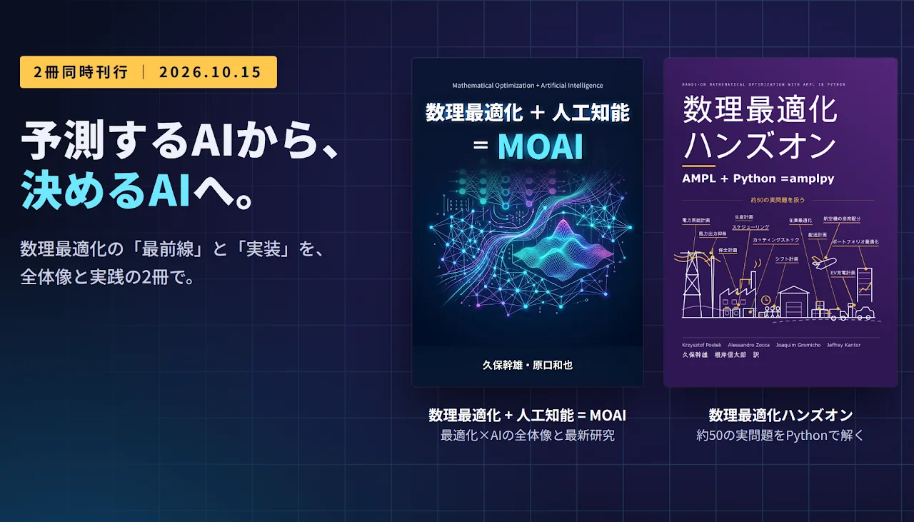

株式会社MOAI Lab（本社：東京都江東区、代表取締役：野々部宏司）は、数理最適化と人工知能の融合を体系化した『数理最適化 + 人工知能 = MOAI』（久保幹雄・原口和也 著）と、『Hands-On Mathematical Optimization with AMPL in Python』の日本語版『数理最適化ハンズオン：AMPL + Python = amplpy』（久保幹雄・根岸信太郎 訳）の2冊を2026年10月15日より紙書籍およびKindle版として、Amazonにて同時発売します。
『数理最適化 + 人工知能 = MOAI』は、最先端技術の概要と全体像をつかみたい方におすすめです。本書では、数理最適化とAIを組み合わせる研究の歴史・分類・最新動向をまとめています。数理最適化の3つの壁（計算量の爆発、不確実性、定式化の難しさ）をAIでどう越えるかを7つの融合パターンで体系化し、LLMを最適化モデリングに活用する研究の動向までを一冊で概観できます。
『数理最適化ハンズオン：AMPL + Python = amplpy』は、シフト計画から電力系統の運用、金融まで約50の実問題をPythonとAMPLで実際に解きながら学ぶ実践書です。定式化からAMPL / amplpyによる実装、結果の解釈までを実行できるコードとともに解説し、線形最適化から確率的最適化・2段階問題まで、複数のオープンソースや商用の最適化ソルバーに対応しています。9月に発売した『AMPL: 数理計画のためのモデリング言語』の応用編にあたりますが、AMPLの文法は第1章で扱うため、初めてでも読めます。

刊行の背景
機械学習は予測や関数近似を、数理最適化は制約を満たす厳密な意思決定を得意としてきました。この2つは長らく独立した分野として発展してきましたが、いま「予測してから決める」だけでなく、「決めるために学習する」「学習で最適化を速くする」といった深い融合が始まっています。
大規模言語モデル（LLM）が自然言語から最適化モデルを組み立てる研究も進んでいます。ただし、AIが書いたモデルが現実の問題を正しく表しているかを判断するには、依然としてモデリングの知識が欠かせません。
『数理最適化 + 人工知能 = MOAI』は、数理最適化とAIを組み合わせる手法の全体像を整理した書籍です。一方、『数理最適化ハンズオン：AMPL + Python = amplpy』は、数理最適化のモデリングと実装を実問題を通して学ぶ実践書です。回帰モデルやサポートベクターマシンを最適化で学習する例や、需要予測をもとに生産計画を立てる例など、『MOAI』で整理した融合パターンの一部にあたる例題も収録しています。2冊をあわせて読むことで、最適化×AIの最前線とその土台となるモデリングの技術の両方を学べます。
こんな現場の課題に
現場でよくある問いと、その検討に参考になる各書の該当箇所を紹介します。
『数理最適化 + 人工知能 = MOAI』
AIと最適化をどう組み合わせればよいか、実務家が抱える問いに対して、本書は次の手法を紹介します。
| 現場の問い | 本書で取り上げる手法 |
|---|---|
| 需要予測の精度は上がったのに、計画のコストが下がらない | 予測後最適化、Decision-Focused Learning |
| 同じ型の計画を毎日解いているが、計算に時間がかかり現場の判断に間に合わない | ソルバーへのヒントの学習、最適化プロキシ |
| 需要が確定する前に、トラック台数などの手配を決めなければならない | 最適化結果を教師にした予測 |
| AIの判断根拠を説明したい、公平性を担保したい | 最適決定木、公平性制約 |
| モデルを作れる人材が足りない | LLMによるモデル生成とその検証 |
| 状況が刻々と変わる中で、計画を立て直し続けたい | 強化学習、モデル予測制御 |
| そもそも、どの技術から手をつけるべきか | 7つの融合パターンによる整理 |
『数理最適化ハンズオン：AMPL + Python = amplpy』
業界ごとの代表的な問題を題材に、動くコードで解き方を示しています。自社の課題に近いモデルを手本にできます。
| 分類 | 収録問題例 |
|---|---|
| 生産・配合計画 | マイクロチップ・多製品の生産計画、需要予測を用いた生産計画、2段階・ロバスト最適化による生産計画、製油所の生産、ミルクのプーリング問題 |
| 切り出し・詰め込み | カッティングストック問題、ストリップパッキング |
| スケジューリング | 従業員のシフト計画、機械スケジューリング、ジョブショップ計画、保全計画、電気自動車の充電スケジューリング |
| 物流・在庫 | ガソリン配送問題、水産物流通センターの在庫最適化、経済的発注量、ポップアップショップ |
| 航空 | 機材割当問題、航空機の座席配分問題 |
| エネルギー | 電力需給計画、経済負荷配分、最適潮流計算、風力出力抑制と需給計画 |
| 金融 | 平均絶対偏差・マーコウィッツ・確率制約付き・最適成長の各ポートフォリオ、ケリー基準、投資ホイール、暗号資産と外国為替の裁定取引 |
| 機械学習 | 最小絶対偏差回帰、最小二乗回帰、ワインの品質予測、SVMによる2値分類 |
| その他 | 晩餐会の座席配置、多層断熱材の最適設計、農家の問題、覆面算 |
既刊とあわせた4冊の読み方
8月発売の『AI 時代の時系列予測』、9月発売の『AMPL』とあわせて、「予測する」から「決める」までを目的に応じてお読みいただけます。
| 書籍 | 位置づけ | 参考になる場面 |
|---|---|---|
| AI 時代の時系列予測（8月発売） | 古典から最新の予測手法の紹介 | 需要予測などのモデルを選び、評価指標で正しく比較するとき |
| 数理最適化 + 人工知能 = MOAI（今回発売） | AIと最適化の融合技術の概要と全体像 | どの課題にどの技術を当てるかを検討するとき |
| AMPL: 数理計画のためのモデリング言語（9月発売） | モデリングの基礎 | 問題を数理モデルとして表す方法を学ぶとき |
| 数理最適化ハンズオン（今回発売） | 実践・応用 | 似た実問題のモデルを手本に、実装するとき |
想定読者
- AI・データ活用を「予測」から「意思決定」に広げたいDX推進者、研究開発の責任者
- 生産管理、物流・サプライチェーン、電力、金融などで最適化課題に取り組むエンジニア、アナリスト
- 数理最適化・機械学習・オペレーションズリサーチ（OR）を学ぶ学生・研究者
書籍情報
書籍名：『数理最適化 + 人工知能 = MOAI』
著者：久保 幹雄、原口 和也
企画：株式会社MOAI Lab
発売日：2026年10月15日
判型・ページ数：紙書籍：A5判・138ページ
価格（税込）：Kindle版：1,000円 紙書籍：1,100円
Kindle版リンク：https://www.amazon.co.jp/dp/B0HLP41LBX
書籍名：『数理最適化ハンズオン：AMPL + Python = amplpy』
原著名：『Hands-On Mathematical Optimization with AMPL in Python』（2024）
著者・訳者：Krzysztof Postek、Alessandro Zocca、Joaquim Gromicho、Jeffrey Kantor、久保 幹雄（訳）、根岸 信太郎（訳）
企画：株式会社MOAI Lab
発売日：2026年10月15日
判型・ページ数：紙書籍：A4判・430ページ
価格（税込）：Kindle版：1,000円 紙書籍：2,860円
Kindle版リンク：https://www.amazon.co.jp/dp/B0HLRZSZ4K
著者・訳者紹介
- 久保 幹雄 — 専門はサプライチェーンおよび組合せ最適化。1990年、早稲田大学大学院理工学研究科修了。博士（工学）。早稲田大学助手、東京商船大学助教授、ポルト大学招聘教授などを経て、現在、東京海洋大学教授、株式会社MOAI Lab CTO。
- 原口 和也 — 専門はアルゴリズム論、組合せ最適化、グラフ理論。2007年、京都大学大学院情報学研究科修了。博士（情報学）。石巻専修大学助教および准教授、小樽商科大学准教授、京都大学准教授などを経て、現在、東京海洋大学教授。
- 根岸 信太郎 — 専門は、電力・エネルギーシステム、数理最適化。2018 年、大阪府立大学大学院工学研究科修了。博士（工学）。NEC データサイエンス研究所、東京農工大学特任助教を経て、現在、神奈川大学准教授。
- Krzysztof Postek — Boston Consulting Group。元デルフト工科大学。
- Alessandro Zocca — アムステルダム自由大学。
- Joaquim Gromicho — ORTEC、アムステルダム大学。
- Jeffrey Kantor — ノートルダム大学。